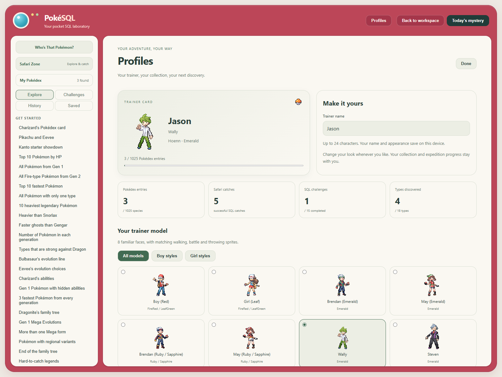
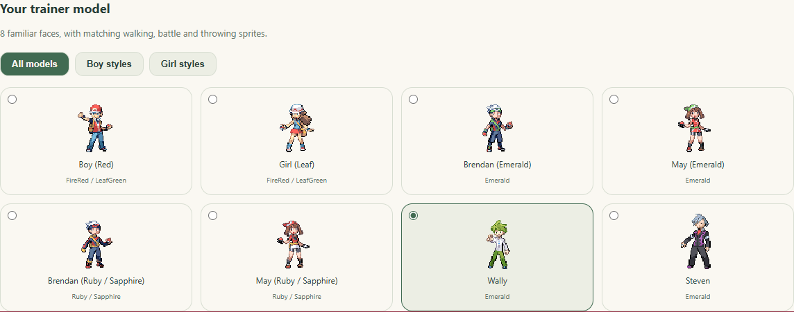
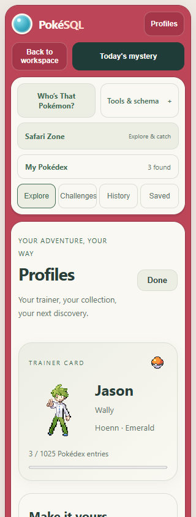

PokéSQL · Profiles
Trainer name, eight models and your collection progress. Captured November 19, 2026, using an isolated demo save.
Your trainer card

Eight trainer models

Steven
Profiles on a phone

Demo totals: three Pokédex entries, five Safari catches and one SQL challenge. Artwork credits are included in the repository.